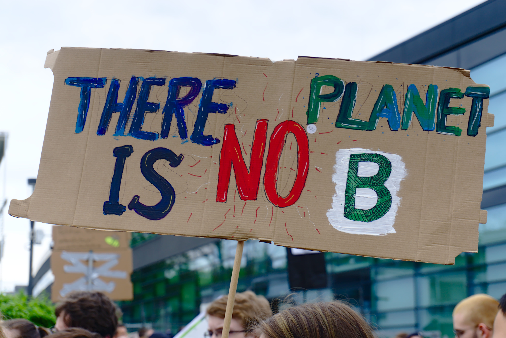

Soluções para o Aquecimento Global
Possíveis Soluções
-
Uso de energias renováveis: Investir em fontes de energia limpa, como solar, eólica e hidrelétrica,
reduz a dependência de combustíveis fósseis.
-
Reflorestamento: Plantar árvores ajuda a absorver o dióxido de carbono (CO2) da atmosfera.
-
Redução de emissões de CO2: Incentivar práticas sustentáveis, como usar transporte público, carros
elétricos e reduzir o consumo de energia.
-
Eficiência energética: Melhorar a eficiência dos edifícios e equipamentos para reduzir o consumo de
energia.
-
Reciclagem: Reciclar materiais como papel, plástico e vidro ajuda a economizar recursos naturais.
-
Conservação da água: Reduzir o desperdício de água e proteger os ecossistemas aquáticos.
-
Agricultura sustentável: Práticas agrícolas que preservam o solo e reduzem o uso de pesticidas.
-
Educação ambiental: Conscientizar as pessoas sobre a importância da sustentabilidade.
-
Políticas públicas: Implementar regulamentações e incentivos para promover práticas ambientalmente
responsáveis.
-
Consumo consciente: Comprar produtos duráveis, locais e com menor impacto ambiental.
